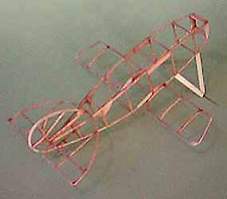
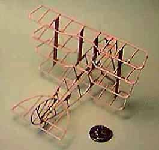

|
Unfortunately, I didn't plan well enough when building this model. My digital camera does not focus properly when photographing a model this small! For reference, that is a US quarter next to the framework. I apologize for the quality of the pix.
The Quad looks a bit silly with just the lower wing mounted. All together it is a lot more satisfying and just waiting for me to put down the camera, and pick out some colors!!   My model was finished with JCI Green and Silver tissue. I presrunk the tissue without a frame, then ironed it flat once it had dried. It was attached to the structure with a UHU brand purple glue stick. As can be seen on the previous page, it sports a 3" carved balsa propeller. This was my first venture into the prop carving ring, and I have David Dodge's prop carving instructions to thank for my success. |
Copyright 1998, Thayer Syme. All rights reserved